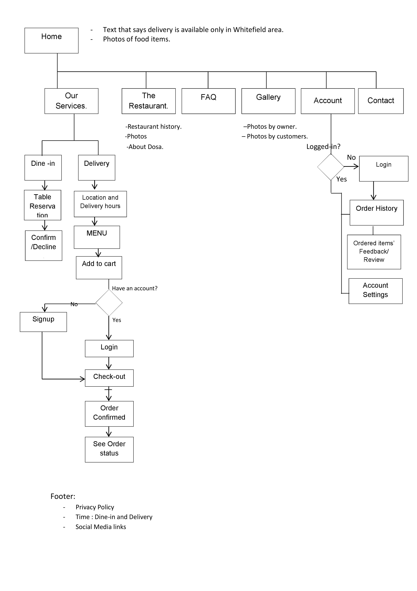
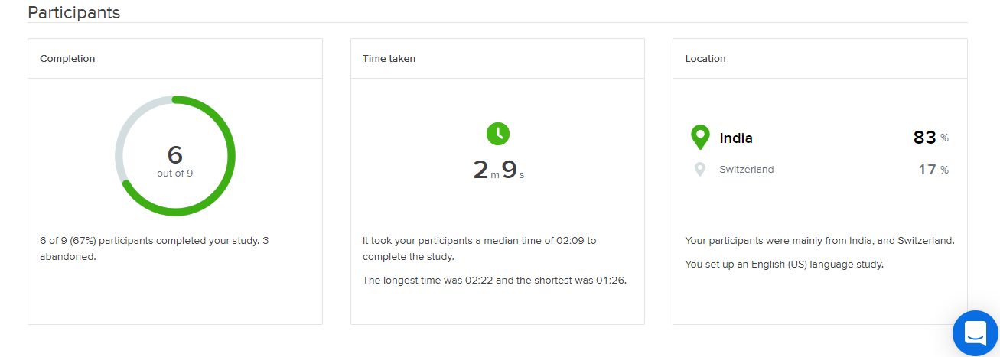
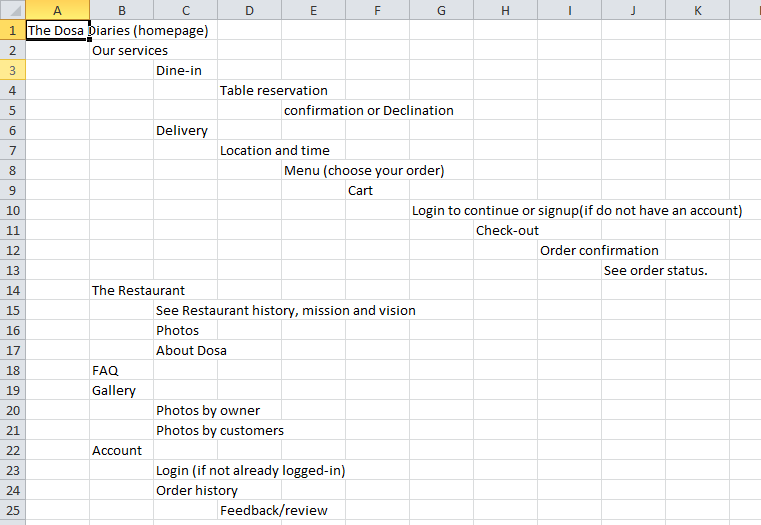
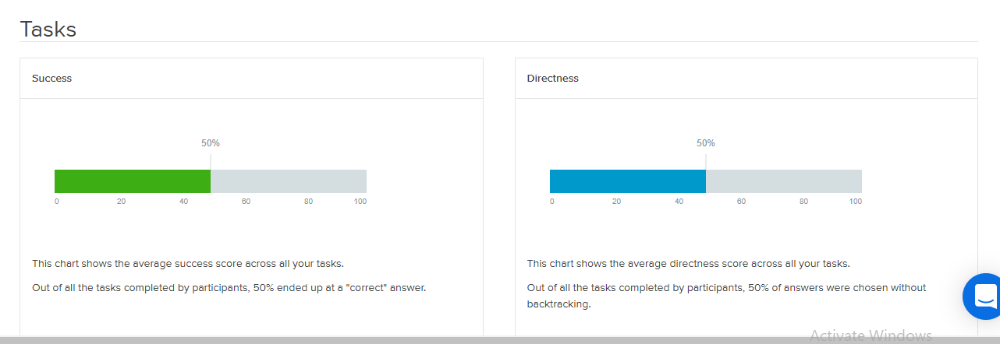

Web Design : Strategy and Sitemap
Introduction
It is a self created project. This project has been developed from scratch by me as an assignment project for the specialization course "UX design" by California Institute of Arts in Coursera. This is the first of the two parts
where strategy and sitemap for the project has been developed.
Project Overview
Here is the premise of the project: To plan and design the website of a newly opened restaurant that provides dine-in and food delivery services to customers living nearby. The centerpiece of this website will be an online food selecting and ordering
system.
Design Process
The process of development of this project was mainly divided into the below 3 categories.
Ideation
Outline of scope
Site-mapping (IA)
- Understanding the problem.
- Understanding the users.
- Understanding the client.
|
- Content requirements.
- Functionality requirements.
|
- Deciding the heirarchy of elements.
- Sitemap testing.
|
1. Ideation or Strategy
Restaurant concept
Restaurant Name & URL: The Dosa Diaries, www.thedosadiaries.com
Foods & drinks
Dosa: a popular (South) Indian food.
Dosa:
Vegetarian
- Potato Masala dosa
- Mysore Masala dosa
- Onion Masala dosa
- Oats dosa
- Paper dosa
- Cheese dosa
- Sorekai dose |bottle gourd dosa | Lauki dosa
- Fermented ragi dosa | Finger millet dosa
- Sajje dose | Pearl millet dosa
- Hesaru kalu dose | Green gram dosa
- Godi dose | Wheat flour dosa
- Cucumber sweet dosa
- Rava (Semolina) onion dosa
- Cabbage dosa
Non-Vegetarian
- Egg dosa
- Chicken Keema masala dosa
- Mutton keema masala dosa
- Prawns dosa.
Beverages (Non-alcoholic drinks): Smoothies, Seasonal fruit juices and Sodas.
Location:
India (southern region), Karnataka, Bengaluru (Silicon Valley of India).
Delivery radius: Whitefield, Bengaluru.
Main target audience:
Delivering food to IT folks working in shifts, to their offices. Techies working in night shifts and weekend shifts can order and get their food delivered to their office gates (Restaurant is only open from 9pm to 5am on Mon-Fri and 24 hours service
on Sat & Sun).
Target users
The website will focus on the following target audiences:
- Techies working in off-shore client projects (specifically, in night shifts and weekend shifts).
- Young IT employees migrated from their hometown to city, andstaying at youth hostels for work.
- Lazy youth who do not wish to cook after work.
Demographics
- Education – College education or more
- Occupations – IT employees, Software Engineers, Computer Science Engineers.
- Age – Early 20s to early 30.
- Marital Status - Single
- Location –Urban.
Personality & Attitudes:
- Youthful.
- Workaholic.
- Ambitious.
Values:
Lifestyles:
- Active.
- Clubbing or hiking on off-days.
- Stay-at-home-and-rest kind of people on an off-day.
User Personas
| Monika Gupta (26) - The workaholic. |
Rohan Gagoi (28) - The nature lover. |
Amit Arya (24) - The party animal. |
- IT Analyst.
- 3 years of work experience.
- Working in a 24*7 off-shore client project. Hence has to work on weekends sometimes.
- Love to spend her off-day at home, while reading novels,listening to music, chatting with family and friends, taking care of her pet.
"My family is my biggest asset."
|
- 28 years old Technical Lead.
- 7 years ago migrated from farther eastern end of India to southern state for job.
- Live in a single rented studio apartment.
- Active, adventurous, nature lover and sports-lovers. Love to go on small hiking trips and recently joined a local hiking club.
“I love hiking because the sweating helps me to detox and nature and fresh air help me to reset my body, mind and soul.”
|
- 24 years Software Engineer Trainee.
- Migrated from a small town to Metro city for job.
- Recently completed college and joined an IT MNC (recruited during campus placement).
- Ambitious, fun-loving, live in youth hostel, never cook and likes to party.
“Work hard but party harder ;).”
|
| Users' Needs |
Clients' Needs |
The website needs to enable the user to:
- Find out if the restaurant delivers to their area.
- Order food online.
- Enable users to choose their Dosa and/or drink from wide-ranging menu.
- Provide a good mobile experience since most of the people will be ordering from their mobile device at office.
- See past order history.
- See order status after it has been placed.
- Send feedback or post reviews about any food item.
|
The website needs to enable the client to:
- To sell food online that will be delivered.
- Provide a system or wide- ranged menu to choose from.
- Communicate fast service.
- Communicate authenticity and home-made taste.
- Communicate affordability.
|
2. Outline of Scope
| Content Requirements |
Functionality Requirements |
"The users will be looking for..."
- Opening times.
- Food menu: Wide range of authentic South-Indian dosa and beverages available to choose from.
- Check if the service available in their area: Only Whitefield pin code.
- Describe delivery speed: “Get your order within 45 minutes”.
- Display prices.
- About us (describing the brand values of providing authentic and home-made taste dosa).
- Contact.
- FAQ
- What is a dosa?
- What are the opening times?
- Do you deliver dosa in my area?
- Do you have any minimum order?
- How much is the delivery charge?
- Who can I contact?
|
"The users will be able to..."
- Choose from a given wide-ranging menu.
- Add to cart.
- Place an order.
- Delivery information.
- Contact details.
- Make payment.
- Get order confirmation.
- Create an account.
- To see order history.
- To check the status of current order.
- To post a review.
- Log-in
|
3. Information Architecture and User Testing
Site-map

Sitemap Testing & Analysis
The goal of this testing is to check sitemap (Information Architecture) of the website is sensible and it mainly concentrates on the following parameters of a system:
- Useful
- Usable
- Findable
- Intuitive
Tool/Resource Used : Optimal Workshop-Treejack
Participants: Family, Cousins, Friends and ex office colleagues

Design Tree

3 Tasks given to participants to complete.


Results and Analysis


As we can see that in the first 2 tasks participants did quite well but in 3rd task "How can I find out if the restaurant delivers to my area?" participants had some difficulties finding the answer.

But, as we see this third task is one of the most important elements of our website. It shows the most important content of the site. It is the first thing that customers will want to know whether the restaurant delivers to their location or not even
before placing the order.
Placing this information in the FAQ (Frequently Asked Question) page alone is not enough (as cleared from test result).
Proposed Solution
To resolve this issue it was decided that the message that shows the delivery radius of the business, should be displayed at the top of the home page along with the FAQ page.
To make this easy for the users/customers to find this important content, it is a good idea to flash the message at the very top of the home page, where it can grab customers really well.